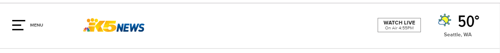
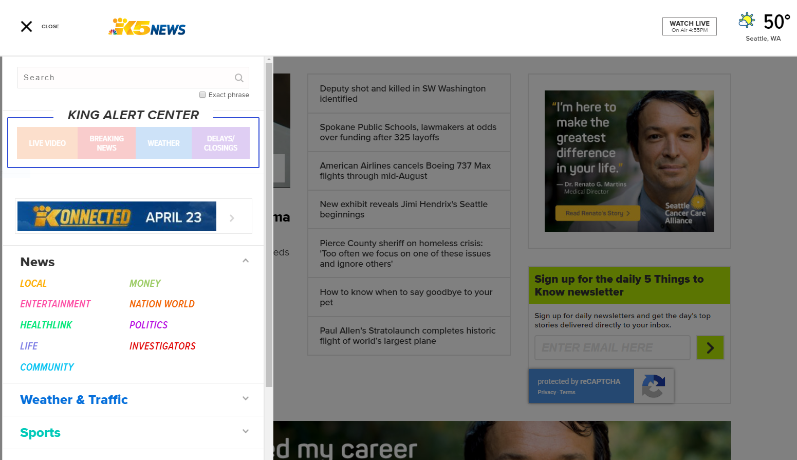
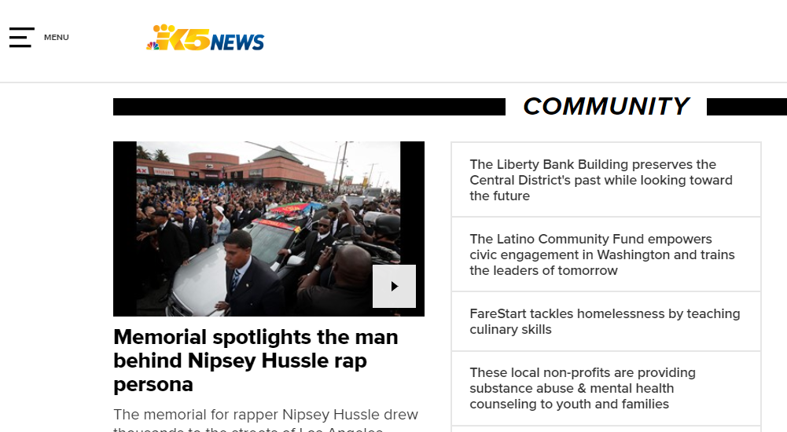
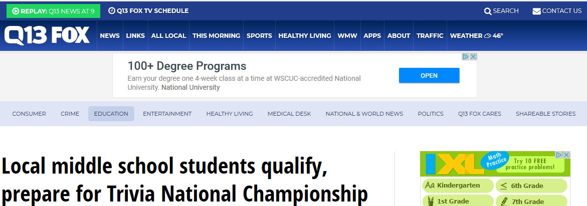

Usable Design
For this assigment, I analyzed the usability of King 5 News, the website for a television news station in Seattle. The criteria used in this analysis include:
- Does this site use basic navigation conventions?
- Is it clear how to navigate this site?
- Is it clear to the user where they are in the site?
- Is an option to search apparent?
Conventions: Are the navigation elements where I expect them to be?
The navigation setup for this website is not conventional for desktop/laptop use, but seems suited to mobile use. There is a hamburger menu in the left corner labeled "menu", but otherwise no explicit navigation. The logo serves as the 'home' button. The weather icon in the right corner takes you to Weather information.
 King 5 News top navigationThe menu opens to show a Search bar and a list of options. The left side menu is not typical for main navigation; this menu displays better on a mobile device. The use of different colored text for the menu items seems like a surprising choice for a news site.
 King 5 News with hamburger menu expandedGetting Around: Is it clear how to navigate this site?
Most users will know how to open the menu. Most would probably also try clicking the logo to return home, and I expect most would try clicking the little weather icon on the top right. A little thinking is required at first, but once you open the menu, how to navigate the site is clear. The hamburger menu is always off to the side, and easy to return to.
Although accessing the menu is easy, not all of the secondary menu options are self explanatory. There is a "Money" option under News, and "Magnify Money" under Features. It might not be clear from the categories how these menu options differ.
Location: Can I tell at a glance where I am in the site?
It's not that easy to tell where you are in this site. For example, one of the main menu options is "News". One of the options under this heading is "Community". Once you are on the "Community" page you really can't tell where you are in relation to everything else on the site. You also might not remember how you got to this page. It is also isn't really clear what "Community" as an option means.
 King 5 New with Community link open under NewsUsing Steve Krug's department store example, this would be like only being able to see the aisle you are in.
In contrast, the KCPQ News website has a more conventional navigation design with a horizontal navigation bar and secondary navigation below for some of the main menu options. Users can see pretty well where they are in relation to the rest of the site at a glance.
 Q 13 News with Education link open under NewsThe primary and secondary navigation links also help to give a sense of how big the site is and the kind of information that is available is always visible.
Search: Am I able to search by term rather than click to find what I want?
The search field is only visible when the menu is open. This seems unconventional as well. It is easy enough to open the menu to find it, but it would be better for users if the search option was a persistently visible part of the navigation.
Conclusion
Analyzing this website made me wonder if King 5's parent company understands that they need to have some sort of web presence, but are not that invested in organizing or designing a website. They are focused on delivering news via television, not via the web. Other than having the most current stories at the top, the main page of the King 5 site doesn't seem to have an apparent method to how it's organized. I get the impression that users are supposed to scroll and click on whatever catches their interest.
I think the lack of a visible main navigation bar is the biggest issue. This could be an attempt to cut down on visual clutter (but I don't think so since the rest of the site is pretty busy). The menu options are also not self explanatory. You might need to be a regular King 5 viewer to be able to navigate their website. I think being able to see the options with an explanation on hover could help with this.